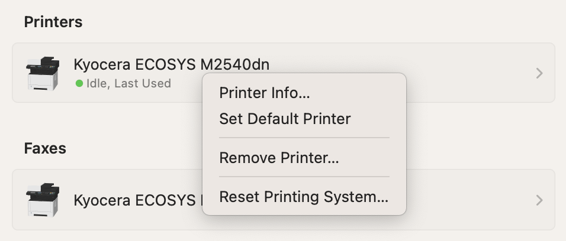
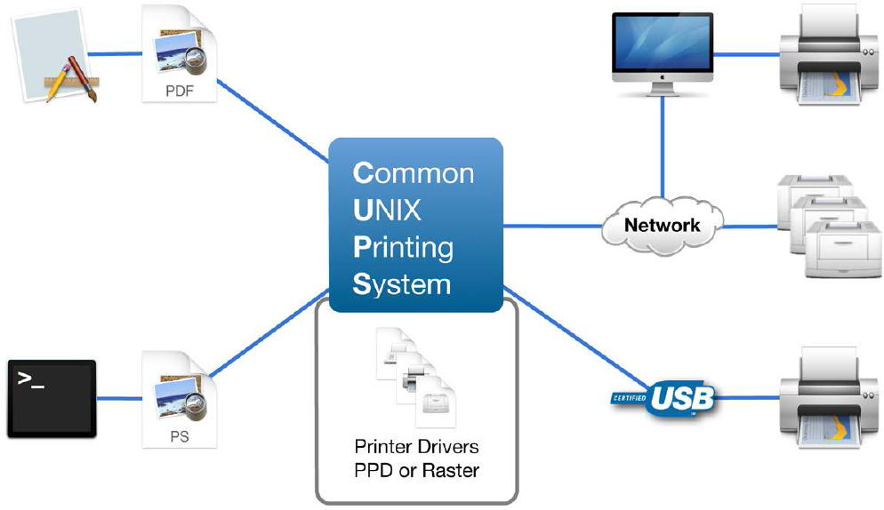
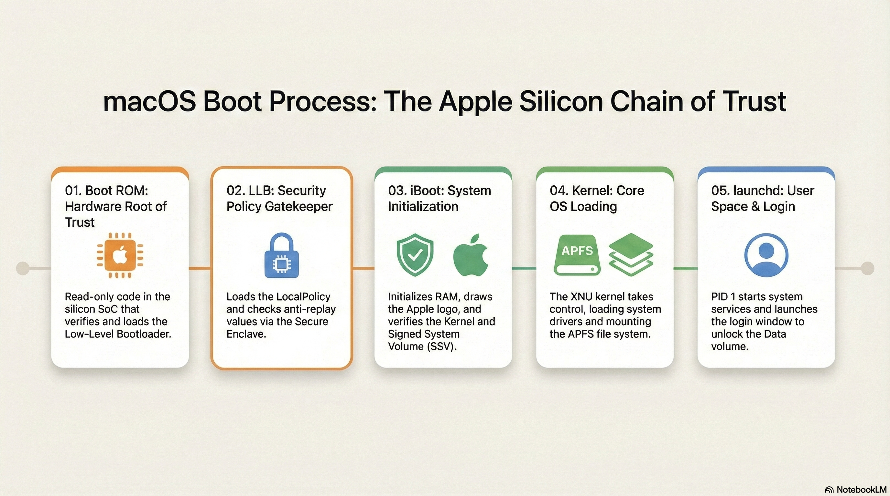
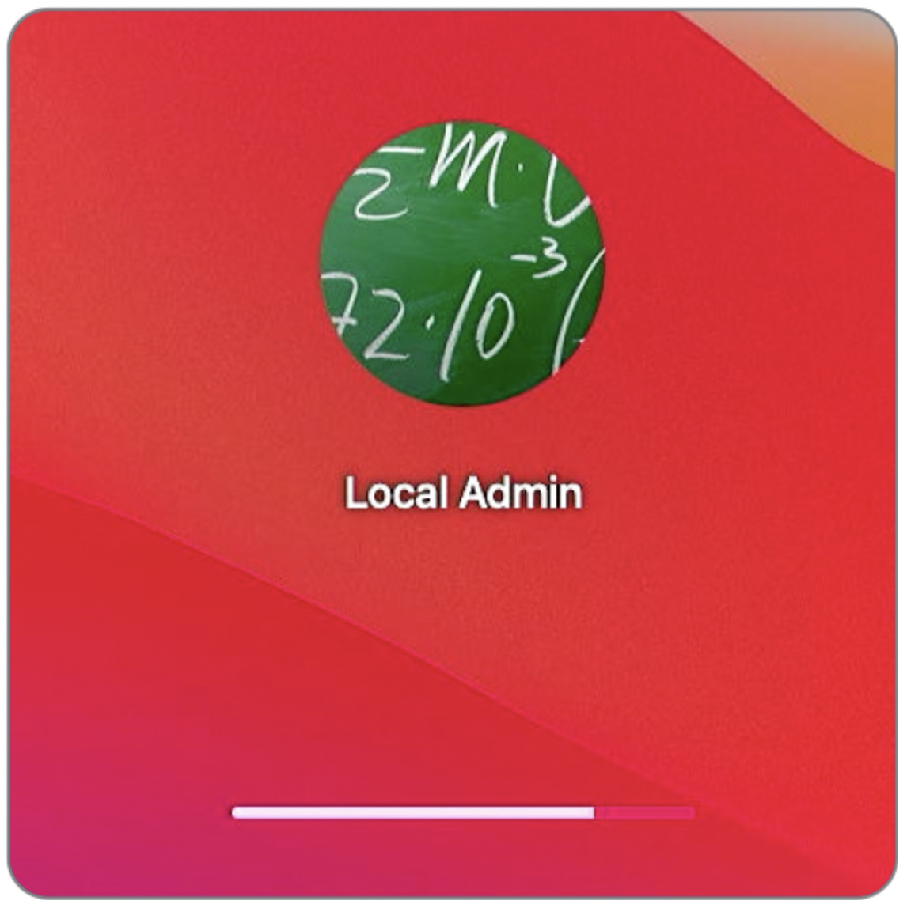
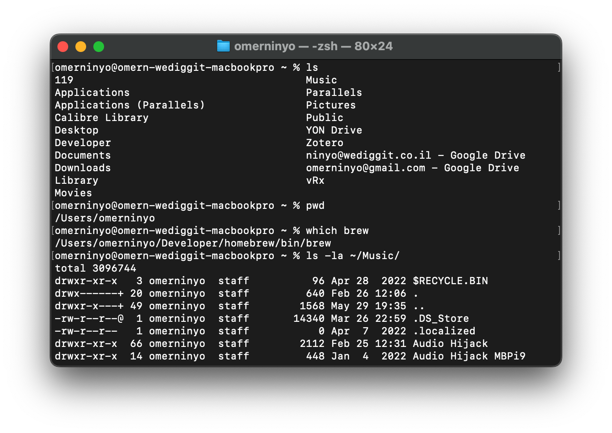
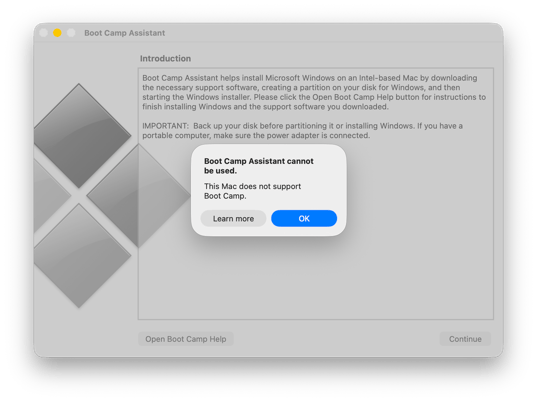

שיעור 13: תהליך האתחול¶
מדריך עזר לתלמיד
סקירה¶
מילון מונחים והגדרות יסוד (Terminology & Concepts)¶
ארכיטקטורת האתחול ב-Apple Silicon¶
- Boot ROM - Stage 0: הקוד הראשון שרץ בהדלקת המק, צרוב בחומרה (Read-Only) ולא ניתן לשינוי. תפקידו לאמת (לפי חתימות חומרה של Apple) ולטעון את השלב הבא (LLB). במקרה של תקלה חמורה, זהו הרכיב שמכניס את המק למצב DFU.
- Low-Level Bootloader / LLB (Stage 1): מנהל האתחול ברמה הנמוכה. תפקידו העיקרי הוא לחפש ולהבין מאיזה Volume המק אמור לבצע Boot, ולאמת את ה-LocalPolicy שלו מול ה-Secure Enclave.
- iBoot - Stage 2: מנהל האתחול ברמה הגבוהה (מה שבעבר כונה "Firmware"). מאמת את ההאשים של ה-SSV (Signed System Volume) ומעלה את ליבת המערכת (Kernel) בצורה בטוחה.
- Kernel - XNU: ליבת מערכת ההפעלה macOS. לוקחת שליטה מ-iBoot, מזהה את החומרה המלאה, מפעילה שירותי מערכת ומערכות קבצים (APFS).
- DFU Mode - Device Firmware Update: מצב חירום קיצוני (ברמת Boot ROM) המאפשר לחבר מק תקול למק תקין עם כבל USB-C ו-Apple Configurator כדי לשחזר Firmware (Revive / Restore) כשהמק לא מסוגל לאתחל כלל.
אבטחת האתחול ומדיניות מקומית¶
- Startup Security Utility: הממשק הגרפי הזמין רק דרך macOS Recovery. משמש להגדרת מדיניות האבטחה של דיסק ההפעלה.
- Full Security: רמת האבטחה המלאה (ברירת המחדל). מאפשרת להריץ רק גרסאות macOS שחתומות ומוכרות כבטוחות בזמן ההתקנה.
- Reduced Security: אבטחה מופחתת. מאפשרת התקנת גרסאות קודמות של macOS, ומהווה תנאי סף כדי לאשר טעינת הרחבות קרנל (Kexts) של חברות צד שלישי (באישור המשתמש או מערכת ה-MDM).
- Permissive Security: אבטחה מתירנית (למפתחים בלבד). מאפשרת להעלות קרנל מותאם אישית שאינו חתום על ידי אפל (מחייב ביטול SIP מוחלט).
- LocalPolicy: אוסף של הגדרות אבטחת האתחול (Secure Boot settings) פר-Volume. זהו קובץ מוצפן וחתום ב-SEP המבטיח שהמערכת עולה עם מדיניות שנקבעה ואושרה ספציפית על ידי מנהל (או MDM).
הרחבות וקרנל¶
- Kernel Extensions - Kexts: תוכנות שרצות במרחב הליבה של המערכת (Ring 0 / Kernel Space). אפל מסיימת את תמיכתה בהן בהדרגה, מאחר וקריסה של Kext מפילה את כל המחשב (Kernel Panic). טעינתן מחייבת מעבר ל-Reduced Security.
- System Extensions: המחליף המודרני ל-Kexts. הרחבות אלו רצות כ-User Space Processes (בתוך "Sandbox"), ולכן הן בטוחות בהרבה. אם הן קורסות, המק ממשיך לעבוד. (סוגים נפוצים: Network Extensions ל-VPN/Firewall, Endpoint Security לאנטי וירוס).
- RecoveryOS Password: בעבר (ב-Intel) השתמשנו ב-Firmware Password. ב-Apple Silicon, ניתן דרך מערכת MDM (פקודת
SetRecoveryLock) לנעול את היכולת להיכנס למצב השחזור (Recovery / Startup Options) ללא ססמה מרחוק. - 1TR (One True Recovery): סביבת השחזור הייעודית והאחידה של מחשבי Apple Silicon המאחדת את כלל אפשרויות האתחול למקום אחד, ומופעלת באמצעות לחיצה ארוכה על כפתור ההפעלה.
- Fallback Recovery (frOS): מנגנון הגיבוי (Resiliency) לסביבת ה-Recovery הראשית ב-Apple Silicon. מופעל על ידי לחיצה כפולה (קצרה ואז ארוכה) על כפתור ההפעלה. מספק כלי התאוששות למקרה שסביבת ה-1TR הראשית נפגמת, אך אינו מאפשר שינוי של רמת האבטחה (Startup Security Utility).
פקודות טרמינל מרכזיות (Terminal Commands & CLI Tools)¶
system_profiler - חקירת סביבת המערכת והאבטחה¶
פקודות המציגות נתונים הנגישים גם ב-System Information, בתצורה מהירה ל-CLI.
system_profiler SPiBridgeDataType- פעולה: מציג מידע על רכיב האבטחה והאתחול. במחשבי Apple Silicon (או Intel עם T2), יציג תחת
Secure Bootאת רמת האבטחה הנוכחית (Full / Reduced).
- פעולה: מציג מידע על רכיב האבטחה והאתחול. במחשבי Apple Silicon (או Intel עם T2), יציג תחת
system_profiler SPSoftwareDataType- פעולה: מציג את מצב ההפעלה הכללי. כאן תוכלו לראות את ה-
Boot Mode(Normal או Safe) ואת הסטטוס של ה-System Integrity Protection(Enabled או Disabled).
- פעולה: מציג את מצב ההפעלה הכללי. כאן תוכלו לראות את ה-
bputil - ניהול מדיניות אתחול (Boot Policy) מתקדם¶
אזהרה: פקודת
bputilפועלת מתוך macOS Recovery בלבד (או כ-root במערכת פעילה להצגת מידע) ומאפשרת שינוי קרביים עמוקים של ה-LocalPolicy מבלי להיעזר בממשק הגרפי. שימוש שגוי עלול להפוך את המק ללא זמין לאתחול (Unbootable).
sudo bputil -dאוbputil --display-policy- פעולה: מציג את תוכן ה-LocalPolicy (הצפנות, סטטוס Kexts, אישור MDM וכו') של דיסק ההפעלה המקומי.
sudo bputil -e- פעולה: הצגת מדיניות לכל ההתקנות הקיימות על המק (אם יש מספר מערכות הפעלה).
bputil -fאוbputil --full-security- פעולה: כופה מעבר ל-Full Security (מבטל את כל הנמכות האבטחה באופן גורף).
bputil -gאוbputil --reduced-security- פעולה: משנה את רמת האבטחה ל-Reduced Security בלבד.
bputil -kאוbputil --enable-kexts- פעולה: מפעיל תמיכה בהרחבות קרנל של צד-שלישי (משנה אוטומטית ל-Reduced Security במידת הצורך).
bputil -mאוbputil --enable-mdm- פעולה: מאשר ל-MDM לנהל עדכוני תוכנה ועדכוני הרחבות קרנל ללא צורך במעורבות המשתמש המקומי (מכניס את ה-LocalPolicy למצב המכיר בסמכות ה-MDM להתערב ב-Boot).
(הערה: פקודות שינוי ב-bputil דורשות לרוב מתן ססמת אדמין או בחירת דיסק מדויקת, ע"י ציון UUID בעזרת פקודת diskutil apfs listVolumeGroups).
kmutil - ניהול הרחבות קרנל (Kernel Management Utility)¶
kmutil showloaded- פעולה: מציג רשימה מלאה של כל הרחבות הליבה שנטענו בפועל בזמן הריצה (מחליף את הפקודה המיושנת
kextstat).
- פעולה: מציג רשימה מלאה של כל הרחבות הליבה שנטענו בפועל בזמן הריצה (מחליף את הפקודה המיושנת
kmutil trigger-panic-medic- פעולה: פקודת חרום ייעודית למצב שחזור (Recovery Mode). מיועדת למקרים שבהם הרחבת צד-שלישי תוקעת את המק בלולאת קריסות (Boot Loop). היא מבטלת מחיקה רשמית של ה-Kexts התלויים ומאפשרת למק לאתחל בבטחה. (יש לציין את נתיב הדיסק, למשל:
kmutil trigger-panic-medic --volume-root /Volumes/Macintosh\ HD).
- פעולה: פקודת חרום ייעודית למצב שחזור (Recovery Mode). מיועדת למקרים שבהם הרחבת צד-שלישי תוקעת את המק בלולאת קריסות (Boot Loop). היא מבטלת מחיקה רשמית של ה-Kexts התלויים ומאפשרת למק לאתחל בבטחה. (יש לציין את נתיב הדיסק, למשל:
csrutil - ניהול הגנת המערכת (System Integrity Protection)¶
מופעלת מ-Terminal במצב שחזור בלבד לביצוע שינויים.
csrutil status- בדיקת סטטוס נוכחי (מופעל/כבוי). מותר להרצה במערכת הפעילה.csrutil disable- מבטל כליל את הגנות ה-SIP (לא מומלץ למעט מטרות פיתוח וחקירה קלינית).csrutil enable- החזרת ההגנה לפעילות.
שאלות ותשובות נפוצות מסטודנטים (FAQ)¶
- ש: האם אפשר לשים Firmware Password במחשבי Apple Silicon כדי למנוע אתחול מדיסק חיצוני?
- ת: לא. אפל הסירה את תמיכת סיסמת הקושחה ב-Apple Silicon משום שהאבטחה בנויה בתוך ה-SoC עצמו ויש צורך באימות משתמש (Volume Ownership) לפני כל שינוי אבטחתי. בארגון, הפתרון הוא הגדרת
RecoveryOS Passwordדרך ה-MDM כדי לנעול את עצם הגישה לתפריט ה-Startup Options.
- ת: לא. אפל הסירה את תמיכת סיסמת הקושחה ב-Apple Silicon משום שהאבטחה בנויה בתוך ה-SoC עצמו ויש צורך באימות משתמש (Volume Ownership) לפני כל שינוי אבטחתי. בארגון, הפתרון הוא הגדרת
- ש: אפליקציית סנכרון ארגונית (כמו Google Drive או OneDrive) מבקשת להתקין Kernel Extension. האם לאפשר?
- ת: מאז macOS Monterey/Ventura אין בזה צורך! אפליקציות סנכרון קבצים עברו להשתמש ב-File Provider API שהוא System Extension שרץ במרחב המשתמש (User Space) ולא מחייב מעבר ל-Reduced Security. מומלץ לדרוש מהיצרן את הגרסה המעודכנת.
- ש: מה עושים כאשר המחשב כל הזמן קורס מיד באתחול (Boot Loop / Kernel Panic) ולא מצליח לעלות למערכת?
- ת: הצעד הראשון הוא לאתחל ב-Safe Mode, מה שמונע טעינת Kexts צד שלישי (בנוסף לניקוי קאשים). אם הבעיה היא אכן ב-Kext ישן, המק יעלה. פתרון מתקדם יותר יהיה להכנס למצב התאוששות ולהריץ בטרמינל את פקודת
kmutil trigger-panic-medic.
- ת: הצעד הראשון הוא לאתחל ב-Safe Mode, מה שמונע טעינת Kexts צד שלישי (בנוסף לניקוי קאשים). אם הבעיה היא אכן ב-Kext ישן, המק יעלה. פתרון מתקדם יותר יהיה להכנס למצב התאוששות ולהריץ בטרמינל את פקודת
קישורים מומלצים ולקריאה נוספת¶
- Startup Disk security policy control for a Mac - מאמר טכני המסביר למה ואיך מנמיכים את רמות האבטחה במק כדי לטעון תוספי חומרה (Kexts).
- Boot process for a Mac with Apple silicon - מסמך עומק רשמי על שרשרת ההפעלה (Boot process) של מעבדי Apple Silicon.
- Booting an M1 Mac from hardware to kexts: 1 Hardware - מאמר שחופר על השלבים המוקדמים ביותר של הפעלת החומרה בתהליך האתחול.
- Booting an M1 Mac from hardware to kexts: 2 LLB and iBoot - החלק השני במאמר שסוקר את תהליך טעינת מערכת ההפעלה מהאחסון.
סרטון סיכום¶







המחשה ויזואלית (עזר לתלמיד)
תמונות אלו ממחישות את הממשק או המנגנון הרלוונטי לנושא השיעור.